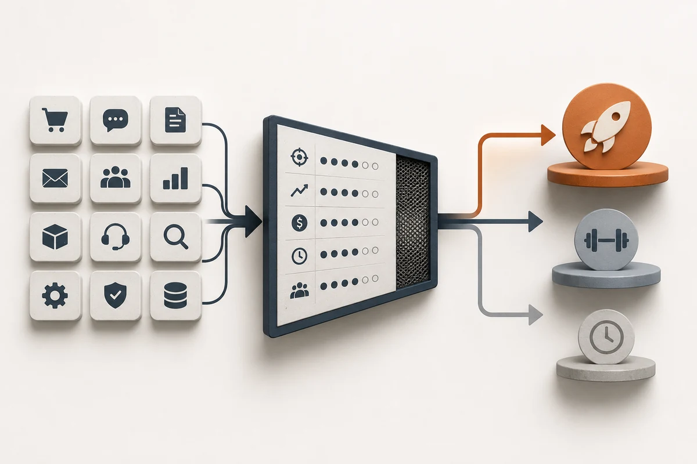

Гайд · ИИ для бизнеса
Как выбрать первый ИИ-проект в бизнесе: скоринг и 12 кандидатов
Как выбрать первый ИИ-проект в бизнесе: семь критериев со взвешенным скорингом (повторяемость, метрика, данные, владелец, цена ошибки, сложность, регуляторика), оценка 12 типовых сценариев и кейс решения в дистрибьюторской компании.
Автор · проверено 22 мая 2026 г.

Содержание
Краткое резюме
По данным отчёта «Яков и Партнёры» за 2025 год, российские компании, которые получили реальный экономический эффект от внедрения ИИ, в 9 из 10 случаев начинали с одного узкого процесса — без широких амбициозных программ цифровой трансформации. Цена правильно выбранного первого проекта обычно лежит в диапазоне 80–350 тыс ₽ запуска и 8–25 тыс ₽/мес поддержки; цена неправильно выбранного — потерянные 3–6 месяцев и испорченная репутация ИИ-направления внутри компании ещё на год вперёд.
Правильный первый проект проходит через семь критериев. Чем выше суммарный балл по шкале ниже, тем выше шанс окупаемости.
| # | Критерий | Что оцениваем | Вес |
|---|---|---|---|
| 1 | Повторяемость процесса | сколько раз/мес выполняется | 20 |
| 2 | Понятная метрика | время, конверсия, доля автоматизации | 20 |
| 3 | Качество данных | сколько чистых примеров уже есть | 15 |
| 4 | Владелец результата | есть ли один человек внутри | 15 |
| 5 | Цена ошибки | что произойдёт при неверном ответе | 15 |
| 6 | Сложность интеграции | сколько систем и ролей нужно связать | 10 |
| 7 | Регуляторная нагрузка | 152-ФЗ, спецкатегории, отрасль | 5 |
Главная мысль: первый ИИ-проект выбирается по сумме баллов в строгой системе оценки — «интересность» процесса в расчёт не входит. Любой процесс, набирающий меньше 60 из 100, имеет высокий риск списания бюджета без эффекта.
Эта статья дополняет опорный гайд как внедрить ИИ в бизнес в 2026 году: там — общий план внедрения, здесь — детальная система выбора первого процесса с весами и числами. Бюджетная сторона разобрана в гайде сколько стоит внедрение ИИ в компанию.
Когда нужен внешний скоринг
Оценим ваши процессы-кандидаты вместе
Если у вас 5–10 кандидатов и непонятно, как объективно их сравнить, имеет смысл прогнать список через скоринг с архитектором до выбора подрядчика.
Оставить заявку на разборЧто значит «первый ИИ-проект» и какие ожидания правильные
Первый ИИ-проект — это пилот в одном узком процессе с измеримой метрикой и сроком 30–45 дней. Главная задача пилота — проверить, что в конкретном процессе ИИ даёт измеримый эффект при контролируемых рисках; «внедрение технологии» само по себе целью не является.
Правильные ожидания от первого проекта в 2026 году:
- бюджет запуска: 80–350 тыс ₽ для малого и среднего бизнеса, до 1–2 млн ₽ для среднего и крупного с интеграциями;
- ежемесячная стоимость: 8–80 тыс ₽ в зависимости от объёма и архитектуры;
- срок до первого результата: 30–45 дней;
- эффект на уровне одной метрики: 2–10× ускорение или 5–20 п.п. изменения качества/конверсии;
- ROI первого пилота: 6–18 месяцев окупаемости.
Неправильные ожидания, которые ломают первый проект:
- «компанию надо трансформировать» — это не пилот, это программа на 1–2 года;
- «давайте сразу всем выдадим Claude/ChatGPT» — это не проект, это покупка лицензий без процесса;
- «у нас всё на ИИ-агентах» — это последний этап после нескольких удачных пилотов, не первый;
- «потратим побольше, чтобы сделать с запасом» — лучше потратить мало и понять, что не работает, чем дорого зафиксировать неверный сценарий.
Подробный разбор типовых ошибок, в которые упирается первый проект, — в гайде об ошибках внедрения ИИ.
Семь критериев выбора первого проекта (с весами)

Каждый процесс-кандидат оцениваем по 7 критериям. Балл от 0 до максимума по столбцу «Вес». Итоговая сумма от 0 до 100.
Критерий 1. Повторяемость процесса (вес 20)
Сколько раз процесс выполняется в месяц прямо сейчас? ИИ окупается на потоке.
| Объём операций в месяц | Балл (0–20) |
|---|---|
| Меньше 50 | 0 |
| 50–200 | 10 |
| 200–1 000 | 15 |
| Больше 1 000 | 20 |
Если процесс выполняется реже 50 раз/мес — пилот лучше отложить. Настройка съест экономию.
Критерий 2. Понятная метрика (вес 20)
Можно ли сформулировать ровно одну метрику, которую должен изменить пилот?
- 20 — есть одна понятная метрика, для неё известен текущий показатель и желаемое изменение (например, «время первого ответа клиенту с 4 ч до 30 мин»);
- 12 — метрика понятна, но текущий показатель не замерен;
- 5 — есть несколько метрик, не ясно, какая главная;
- 0 — «улучшим качество работы вообще».
Критерий 3. Качество данных (вес 15)
Сколько чистых пар «вход → правильный выход» уже доступно?
- 15 — больше 300 размеченных примеров в едином формате (CRM, таблица, база знаний);
- 10 — 100–300 примеров, разбросаны по 2–3 источникам;
- 5 — есть, но в десятке источников и без разметки;
- 0 — данные отсутствуют или хаотичны.
Критерий 4. Владелец результата (вес 15)
Есть ли внутри компании один человек с правом принять решение stop/go по метрике?
- 15 — собственник, CEO, COO или руководитель отдела явно владеет метрикой пилота;
- 8 — владелец есть, но размыт между двумя ролями;
- 0 — владельца нет, «занимается подрядчик».
Критерий 5. Цена ошибки (вес 15)
Что произойдёт, если ИИ выдаст неверный ответ?
- 15 — извинение и ручная правка (поддержка, контент, КП);
- 10 — потеря времени менеджера или клиента (квалификация лидов);
- 5 — финансовая ошибка средней тяжести (документы);
- 0 — юридический/репутационный/медицинский ущерб (увольнения, кредиты, медицинские рекомендации).
Критерий 6. Сложность интеграции (вес 10)
Сколько систем и ролей нужно связать для работы пилота?
- 10 — одна система (CRM или мессенджер) и один владелец;
- 6 — две системы, один владелец, один согласующий;
- 3 — три системы или три роли;
- 0 — четыре системы и больше или сложная архитектура прав.
Критерий 7. Регуляторная нагрузка (вес 5)
- 5 — клиентских персональных данных нет (внутренние документы, маркетинг);
- 3 — есть стандартные клиентские данные (имя, телефон, заказ);
- 0 — спецкатегории по 152-ФЗ (медицина, кредитные истории, биометрия).
Как читать итоговый балл
| Сумма | Решение |
|---|---|
| 80–100 | 🟢 идеальный первый проект, запускайте пилот |
| 60–79 | 🟡 рабочий кандидат, но проверьте 2–3 самых слабых критерия |
| 40–59 | 🟠 высокий риск, лучше другой процесс или дополнительная подготовка |
| 0–39 | 🔴 не запускать; перевыбрать процесс или вообще отложить ИИ |
Двенадцать типовых кандидатов с оценками
Оценки усреднены для малого и среднего бизнеса в России. Конкретные баллы в вашей компании могут отличаться, но порядок остаётся стабильным.
| Процесс | Повторяемость | Метрика | Данные | Владелец | Цена ошибки | Сложность | Регуляторика | Итого |
|---|---|---|---|---|---|---|---|---|
| Квалификация входящих заявок | 20 | 18 | 12 | 12 | 12 | 8 | 3 | 85 |
| Поддержка по FAQ в чате | 20 | 18 | 10 | 12 | 15 | 6 | 3 | 84 |
| Подготовка КП по шаблону | 15 | 15 | 12 | 12 | 12 | 6 | 5 | 77 |
| Типовые документы по шаблону | 15 | 12 | 12 | 10 | 10 | 6 | 3 | 68 |
| Транскрипция и разбор звонков | 15 | 15 | 15 | 10 | 15 | 8 | 3 | 81 |
| Контент для соцсетей | 10 | 8 | 12 | 12 | 15 | 10 | 5 | 72 |
| Аналитика отзывов | 10 | 10 | 15 | 8 | 15 | 6 | 5 | 69 |
| Извлечение данных из накладных | 15 | 15 | 10 | 8 | 10 | 3 | 5 | 66 |
| Корпоративный поиск (RAG) | 15 | 8 | 5 | 8 | 15 | 3 | 5 | 59 |
| Скрининг резюме | 10 | 12 | 12 | 8 | 0 | 6 | 0 | 48 |
| Автоматическое принятие кредитов | 15 | 15 | 10 | 8 | 0 | 0 | 0 | 48 |
| Медицинские рекомендации | 10 | 8 | 5 | 5 | 0 | 0 | 0 | 28 |
Топ-5 кандидатов («🟢») — квалификация заявок, поддержка по FAQ, анализ звонков, подготовка КП, контент для соцсетей. Это безопасное стартовое поле для первого пилота в большинстве компаний.
Внизу — задачи с критическими провалами по «цене ошибки» и «регуляторике». Они не «плохие задачи», но как первый проект — почти гарантированный провал.
Углублённый разбор каждого сценария — в гайде какие бизнес-процессы автоматизировать с помощью ИИ. Текущие новости по сравнительной зрелости внедрений — в категории «ИИ-индустрия».
Кейс: выбор первого проекта в средней дистрибьюторской компании
Ситуация. Дистрибьютор оптовой техники, 110 сотрудников, 1 400 B2B-клиентов, 350 заявок в неделю на расчёт и предложение. Собственник решает начать внедрение ИИ. На совещании руководители предлагают четыре сценария: ИИ-бот поддержки, автоматизация подготовки КП, корпоративный поиск по регламентам, ИИ для скрининга вакансий продавцов.
Применение скоринга.
| Кандидат | Повторяемость | Метрика | Данные | Владелец | Цена ошибки | Сложность | Регуляторика | Итого |
|---|---|---|---|---|---|---|---|---|
| Поддержка по FAQ | 20 | 18 | 8 | 12 | 15 | 6 | 3 | 82 |
| Подготовка КП | 15 | 18 | 12 | 12 | 12 | 6 | 5 | 80 |
| Корпоративный поиск | 10 | 8 | 5 | 8 | 15 | 3 | 5 | 54 |
| Скрининг продавцов | 5 | 12 | 10 | 8 | 0 | 6 | 0 | 41 |
Решение. Первый пилот — подготовка КП (80 баллов). Поддержка по FAQ почти равна по баллу, но базы знаний для бота нет, её надо собирать 4–6 недель. КП можно стартовать сразу: исторические КП лежат в CRM, шаблоны структурированы, владелец метрики — коммерческий директор.
Что нужно для пилота.
- выгрузка 200 закрытых КП за последний год;
- 6 шаблонов под разные категории клиентов;
- доступ к CRM (Bitrix24) и к каталогу позиций;
- лимит 8 тыс ₽/мес на YandexGPT и алерт;
- режим «менеджер вычитывает каждое КП до отправки».
Метрики пилота через 45 дней.
- среднее время на КП: 65 мин → 18 мин (–72%);
- доля КП, отправленных в день поступления запроса: 38% → 84%;
- конверсия из КП в счёт: 21% → 27%;
- ошибок в позициях за пилот: 3 (за 240 КП), все пойманы менеджерами.
Бизнес-логика. При среднем чеке поставки 480 тыс ₽ и потоке 240 КП за 45 дней прирост конверсии на 6 п.п. = 14 дополнительных сделок ≈ 6,7 млн ₽ выручки за период. Запуск пилота — 180 тыс ₽, ежемесячно — 22 тыс ₽. Окупаемость — внутри первого месяца стабильной работы.
Что не сработало бы. Если бы компания выбрала корпоративный поиск (54 балла) или скрининг продавцов (41 балл) — оба провалились бы по разным причинам. Корпоративный поиск — из-за хаотичной базы регламентов. Скрининг — из-за критической цены ошибки в HR-процессе.
Worked example: расчёт скоринга для собственного процесса
Возьмём гипотетический процесс «автоматизация работы с отзывами на маркетплейсах» в средней компании-продавце Wildberries и Ozon. Поток отзывов — 600 в месяц.
Скоринг по 7 критериям.
| Критерий | Балл | Обоснование |
|---|---|---|
| Повторяемость | 15 | 600 отзывов/мес — попадает в диапазон 200–1000 |
| Метрика | 12 | Метрика понятна: время первого ответа на негативный отзыв (с 18 ч до 2 ч), но текущий показатель замерен только частично |
| Данные | 12 | Есть 1 800 отзывов за полгода с ручными ответами, в Excel — но требуется нормализация |
| Владелец | 12 | Руководитель маркетплейс-направления — понятный владелец метрики |
| Цена ошибки | 12 | Ошибочный ответ — извинение и правка; репутационный риск средний |
| Сложность | 6 | Две системы: Wildberries Personal Cabinet API + Ozon Seller API |
| Регуляторика | 3 | Имя клиента (никнейм) и заказ — стандартные клиентские данные |
| Итого | 72 | 🟡 рабочий кандидат |
Вывод по проекту. 72 балла — это «жёлтая зона». Запускать можно, но перед стартом стоит усилить два самых слабых критерия:
- Замерить текущее время первого ответа за 4 недели (повысит балл «метрики» до 18).
- Нормализовать 1 800 отзывов в едином формате (повысит балл «данных» до 15).
После двух дополнительных недель подготовки балл вырастет до 81 — это уже «зелёная зона» без замены процесса.
Альтернатива. Если у компании одновременно есть процесс «подготовка ответов на типовые запросы клиентов в Telegram» с потоком 1 500 в месяц и уже размеченной базой знаний — он может набрать 85+ баллов и стать лучшим первым кандидатом. Решение принимается по более высокому баллу.
Когда первый ИИ-проект не стоит запускать вовсе
Несмотря на хайп вокруг ИИ, есть конкретные ситуации, в которых первый проект гарантированно не окупится — независимо от выбранного процесса.
- Ни один процесс не набирает 60+ баллов. Если все кандидаты в красной/оранжевой зоне, технологическая часть не спасёт. Сначала укрепляем процессы (стабилизация, владельцы, данные), потом возвращаемся к выбору ИИ-кандидата.
- В компании нет 20 часов времени собственника или COO на 30 дней. Без вовлечения первого лица или операционного директора пилот зависает на этапе «что считаем правильным ответом». Подрядчик не может закрыть этот вопрос.
- Предыдущий ИИ-проект провалился меньше 6 месяцев назад. Команда ещё помнит негативный опыт. Нужно сначала вернуть доверие — короткими «не-ИИ» победами или одним точечным маленьким экспериментом — потом снова запускать пилот.
- Цифровая зрелость отдела меньше базовой. Если в отделе нет CRM, нет учёта операций, нет KPI — сначала наводим базовый порядок учёта. ИИ поверх хаоса умножает хаос.
- Регуляторно-чувствительная ниша без юриста. Медицина, кредиты, страхование, обработка спецкатегорий персональных данных — для этих отраслей первый ИИ-проект делается только после консультации с профильным юристом.
Если попадаете под пункты 1–2 — лучше потратить квартал на укрепление процессов и вернуться к ИИ через 3–4 месяца. Если под пункт 3 — пауза 6+ месяцев и точечная победа в стороне от ИИ. Если под 4–5 — нужен предварительный этап подготовки, не пилот ИИ.
Когда нужно второе мнение
Сомневаетесь в выборе кандидата?
Перед утверждением бюджета и подрядчика полезно сверить выбор с практиком, который видел десятки пилотов в подобных компаниях.
Обсудить проектРоссийский контекст: 152-ФЗ, локальные модели, отраслевые особенности
Для российских компаний выбор первого процесса упирается в три темы, без которых сценарий может быть отброшен задним числом.
- 152-ФЗ как фильтр на старте. Если первый процесс работает с клиентскими персональными данными (имена, телефоны, email, заказы, переписка) — модель выбираем только из «российского контура»: GigaChat (Сбер) или YandexGPT (Яндекс). Договор оформляется на российское юрлицо, хранение в РФ. Это снимает значительный регуляторный балл при скоринге.
- Локальные тарифы в рублях. GigaChat API и YandexGPT тарифицируются в рублях, оплачиваются по счёту, без VPN. Для большинства задач классификации, генерации и саммари качества достаточно — особенно для русскоязычных входов и выходов.
- Отраслевая специфика. В финансах — отдельная регуляторика ЦБ и Банка России (модельный риск, аудит модели). В медицине — Росздравнадзор. В госсекторе — требования к российскому ПО. Эти отрасли требуют отдельного юриста на этапе выбора процесса, не на этапе запуска.
- Каналы коммуникации. Для первых процессов в продажах и поддержке российского B2C — Telegram, ВКонтакте, OK, маркетплейсы (Wildberries, Ozon, Авито). Все интегрируются через российские конструкторы (Albato) или универсальные (Make, n8n).
Свежие российские внедрения и регуляторные изменения — в разделе ИИ в России.
Вывод Malakhov AI

Выбор первого ИИ-проекта — самое важное решение во всём внедрении. Бюджет и качество подрядчика — вторичны, если процесс выбран неправильно: никакая команда не вытянет провальный сценарий.
Рабочий шаблон выбора:
- Соберите 5–10 процессов-кандидатов в компании.
- Прогоните каждого через 7 критериев со взвешенным скорингом (макс. 100 баллов).
- Берите кандидата с самым высоким баллом, если он 80+. Если максимум 60–79 — усильте 2 самых слабых критерия за 2–4 недели, потом запускайте.
- Если ни один кандидат не набирает 60+ — отложите ИИ-внедрение на квартал и укрепите процессы.
- Запустите пилот за 30–45 дней с одной метрикой, лимитом расходов и режимом «человек принимает финальное решение».
- На 31–46-й день — решение stop/go по метрике. Если рост на ≥50% от целевого — масштабируйте поэтапно. Если меньше — закрывайте пилот и фиксируйте выводы.
Самые надёжные первые кандидаты в 2026 году — квалификация лидов, поддержка по FAQ, анализ звонков, подготовка КП, контент для соцсетей. Самые опасные первые — скрининг резюме, кредитные/медицинские решения, корпоративный RAG на хаотичной базе.
Один аккуратный пилот за 45 дней даёт больше доверия и компетенций внутри компании, чем три амбициозных проекта по полгода без чёткой метрики.
FAQ
Какой первый ИИ-проект выбрать, если непонятно, с чего начать?
Возьмите процесс, который выполняется минимум 50 раз в месяц, имеет одну понятную метрику, владельца внутри компании и низкую цену ошибки. В 2026 году самые надёжные первые кандидаты — квалификация входящих заявок, поддержка по FAQ, подготовка КП по шаблону, разбор звонков и контент для соцсетей.
Сколько процессов сравнивать перед выбором первого?
5–10 кандидатов. Меньше — велик риск пропустить лучший вариант; больше — выбор затянется и упрётся в политику отделов. Прогоните каждого через 7 критериев со взвешенным скорингом, возьмите кандидата с самым высоким баллом.
Какой минимальный балл скоринга для запуска первого пилота?
60 из 100. Кандидаты 80+ запускаются сразу. Кандидаты 60–79 — усиливаются за 2–4 недели по 2 самым слабым критериям и потом запускаются. Кандидаты ниже 60 откладываются или заменяются другим процессом.
Можно ли начать первый ИИ-проект с регуляторно-чувствительного сценария?
Нет, не рекомендуется. Медицина, кредиты, страхование, увольнения и обработка спецкатегорий персональных данных — почти всегда дают 0 баллов по критерию «цена ошибки». Первый пилот безопаснее запустить в сценарии с низкой ценой ошибки и ручной проверкой финального решения.
Кто внутри компании должен выбирать первый ИИ-проект?
Собственник, CEO или COO. Подчинённый руководитель не сможет утвердить выбор процесса в чужом отделе, и руководитель ИТ не может выбрать процесс за коммерческий или операционный блок. Первый ИИ-проект — это бизнес-решение, и технологическая часть в нём подчинённая.
Сколько стоит первый ИИ-проект для среднего бизнеса в России?
Запуск пилота — 80–350 тыс ₽; ежемесячная поддержка — 8–25 тыс ₽. Для процессов с интеграциями и большими объёмами — до 1 млн ₽ запуска и 50–80 тыс ₽/мес. Полный разбор статей бюджета — в гайде сколько стоит внедрение ИИ в компанию.
Что делать, если предыдущий ИИ-проект провалился?
Подождать минимум 6 месяцев перед следующим пилотом и взять небольшой точечный сценарий с заведомо высоким скорингом (85+). Сначала возвращаете доверие внутри команды, потом запускаете полноценный проект. Главная причина провала обычно — выбор процесса, не технология; разбор типовых ошибок — в гайде об ошибках внедрения ИИ.
Источники и данные
Материал проверен 22 мая 2026 года.
- «Яков и Партнёры», 2025. Анализ российского рынка корпоративного ИИ, доля успешных внедрений: https://yakov.partners/
- TAdviser. Каталог внедрений ИИ в российских компаниях разных отраслей: https://www.tadviser.ru/index.php/ИИ
- CNews Analytics. Обзоры корпоративного ИИ и автоматизации: https://www.cnews.ru/
- GigaChat API для юрлиц (18 мая 2026). Тарифы и условия: https://developers.sber.ru/docs/ru/gigachat/tariffs/legal-tariffs
- Yandex AI Studio. Тарифы YandexGPT: https://aistudio.yandex.ru/docs/ru/ai-studio/pricing.html
- Gartner, июль 2024. Прогноз отказа 30% gen-AI проектов после PoC к концу 2025: https://www.gartner.com/en/newsroom/press-releases/2024-07-29-gartner-predicts-30-percent-of-generative-ai-projects-will-be-abandoned-after-proof-of-concept-by-end-of-2025
- 152-ФЗ «О персональных данных». Сводный текст: https://rkn.gov.ru/personal-data/
Дальше
Что можно сделать после чтения
AI-новости в Telegram
Ежедневный короткий дайджест: релизы, инструменты, кейсы внедрения ИИ в бизнес.
Подписаться на дайджестАрхитектурный разбор ИИ
Разберите процессы, данные, риски и экономику до старта разработки.
Оставить заявкуЛичный разговор
Обсудим выбор первого ИИ-проекта в вашей компании — без презентаций, по делу.
Написать в TelegramЧто читать дальше
Связанные разделы
Как внедрить ИИ в бизнес в 2026 году
Опорный гайд по полному циклу внедрения первого ИИ-проекта.
Какие бизнес-процессы автоматизировать с помощью ИИ
Матрица процессов по эффекту, сложности, риску и данным.
Ошибки внедрения ИИ в компании
10 типовых ошибок и кейс провала автоматизации поддержки в B2B SaaS.
По теме